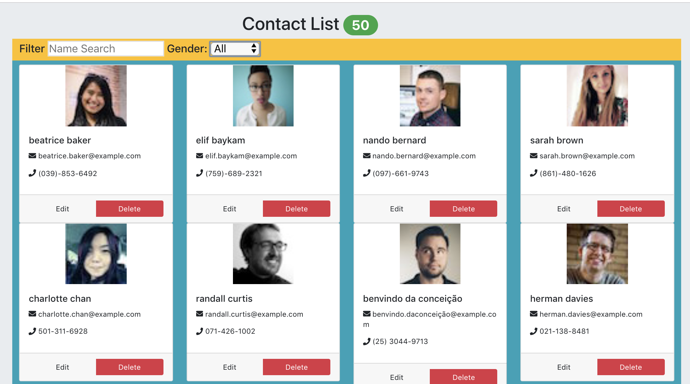

Continue the development of the Contact List SPAs by adding statefulness and making the app interactive and dynamic.
Use the code developed in the previous week (the twoApps/contactList folder) as the starting point for this lab.
The objective is to allow the user edit or delete an existing contact, with the option to undo / cancel the operation, if required. The user should also be able to filter the list of contacts by name and/or gender.
In the previous lab we hard-coded a small sample contaact data set. The Random User web API is a great utility for providing random user data sets in JSON format. For example try this URL in a browser: https://randomuser.me/api/?results=1. It returns a results set size of 1. You csn specify any desired results set size in the request - we will use 50, arbitrarily. The API only supports HTTP GET requests.
In production mode a SPA gets its model data from a 'real' web API that supports full CRUD behaviour. However, during development a stub API is a common technique, either because the real API is not yet developed or to postpone integration until the SPA is complete.
Create the file contactlist/src/dataStore/stubAPI.js and add the following code:
import _ from "lodash";
class StubAPI {
constructor() {
this.contacts = [];
}
find(id) {
let index = _.findIndex(
this.contacts,
contact => `${contact.phone}${contact.cell}` === id
);
if (index !== -1) {
return this.contacts[index];
}
return null;
}
delete(k) {
let elements = _.remove(this.contacts, contact => contact.phone === k);
return elements;
}
initialize(contacts) {
this.contacts = contacts;
}
getAll() {
return this.contacts;
}
update(key, email, phone) {
let index = _.findIndex(this.contacts, contact => contact.phone === key);
if (index !== -1) {
this.contacts[index].phone = phone;
this.contacts[index].email = email;
return true;
}
return false;
}
}
export default new StubAPI();This code uses the lodash utility package - see dependencies section of package.json.
Start the development server from the contactlist folder:
$ npm startOur app will request a data set from the remote web API and store it in the stub API - later we will be able to modify this data locally via our app's UI. In src/App.js replace the entire content of the file with the following:
import React, { Component } from "react";
import Header from "./components/header/";
import ContactList from "./components/contactList/";
import FilterControls from "./components/filterControls/";
import request from "superagent";
import api from "./dataStore/stubAPI"; // NEW
class App extends Component {
componentDidMount() {
request.get("https://randomuser.me/api/?results=50").end((error, res) => {
if (res) {
let { results: contacts } = JSON.parse(res.text);
api.initialize(contacts);
this.setState({});
} else {
console.log(error);
}
});
}
render() {
let contacts = api.getAll();
return (
<div className="jumbotron">
<Header noContacts={contacts.length} />
<FilterControls />
<ContactList contacts={contacts} />
</div>
);
}
}
export default App;The app should now render in the browser similar to below. Note, the user generator API returns a different data set on every request - it's random!

From the twoapps/contactlist folder update the local Git repo:
$ git add -A
$ git commit -m "Added stub API"Restart the development server.
In React terms, a common source of UI state is user input controls, including:
An analysis of this app's behavior requirements yields the following UI state breakdown:
Which components should manage the app's UI state?
Only the Contact component is concerned about the status attribute. Also, no other component needs to be re-rendered while the user is editing/updating a contact. In src/components/contact/index.js, update the Contact component as shown below:
class Contact extends Component {
state = {
status: "",
email: this.props.contact.email,
phone: this.props.contact.phone,
previousDetails: {
email: this.props.contact.email,
phone: this.props.contact.phone
}
};
render() { . . . as before . . .}
}Notes:
The filtering inputs are part of the FilterControls component, however, the App component uses the data to compute the matching set of contacts. Add the state to src/App.js:
class App extends Component {
state = { search: "", gender: "all" };
componentDidMount() { ...... as before .....
}The attributes (color, label) of the buttons associated with a contact could be considered configuration data. It is good practice to separate configuration from logic, thus making an app easier to reconfigure. Create the file src/config/buttonsConfig.js and add the following code:
const buttons = {
normal: {
leftButtonVal: "Edit",
rightButtonVal: "Delete",
leftButtonColor: "btn-default",
rightButtonColor: "btn-danger"
},
delete: {
leftButtonVal: "Cancel",
rightButtonVal: "Confirm",
leftButtonColor: "btn-light",
rightButtonColor: "btn-danger"
},
edit: {
leftButtonVal: "Save",
rightButtonVal: "Cancel",
leftButtonColor: "btn-danger",
rightButtonColor: "btn-light"
}
};
export default buttons;This configuration data is used in the next section.
We will start by adding support for the Edit feature. The code required will involve the following:
Significant changes are required to components/contact/index.js. Replace the entire content with the following:
import React, { Component, Fragment } from "react";
import "./contact.css";
import "../../fontawesome";
import { FontAwesomeIcon } from "@fortawesome/react-fontawesome";
import buttons from "../../config/buttonsConfig";
class Contact extends Component {
state = {
status: "",
email: this.props.contact.email,
phone: this.props.contact.phone,
previousDetails: {
email: this.props.contact.email,
phone: this.props.contact.phone
}
};
handleEdit = () => this.setState({ status: "edit" });
handleCancel = () => {
let { email, phone } = this.state.previousDetails;
this.setState({ status: "", email, phone });
};
handleEmailChange = e => this.setState({ email: e.target.value });
handlePhoneChange = e => this.setState({ phone: e.target.value });
render() {
let activeButtons = buttons.normal;
let leftButtonHandler = this.handleEdit;
let rightButtonHandler = this.handleDelete;
let cardColor = "bg-white";
if (this.state.status === "edit") {
cardColor = "bg-primary";
activeButtons = buttons.edit;
leftButtonHandler = this.handleSave;
rightButtonHandler = this.handleCancel;
}
return (
<div className="col-sm-3">
<div className={`card ${cardColor}`}>
<img
className="card-img-tag center "
alt={this.props.contact.name}
src={this.props.contact.picture.thumbnail}
/>
<div className="card-body">
<h5 className="card-title ">
{`${this.props.contact.name.first} ${
this.props.contact.name.last
}`}
</h5>
{this.state.status === "edit" ? (
<Fragment>
<p>
<input
type="text"
className="form-control"
value={this.state.email}
onChange={this.handleEmailChange}
/>
</p>
<p>
<input
type="text"
className="form-control"
value={this.state.phone}
onChange={this.handlePhoneChange}
/>
</p>
</Fragment>
) : (
<Fragment>
<p>
<FontAwesomeIcon icon={["fas", "envelope"]} />
<span> {this.props.contact.email}</span>
</p>
<p>
<FontAwesomeIcon icon={["fas", "phone"]} />
<span> {this.props.contact.phone} </span>
</p>
</Fragment>
)}
</div>
<div className="card-footer">
<div
className="btn-group d-flex btn-group-justified"
role="group"
aria-label="..."
>
<button
type="button"
className={"btn w-100 " + activeButtons.leftButtonColor}
onClick={leftButtonHandler}
>
{activeButtons.leftButtonVal}
</button>
<button
type="button"
className={"btn w-100 " + activeButtons.rightButtonColor}
onClick={rightButtonHandler}
>
{activeButtons.rightButtonVal}
</button>
</div>
</div>
</div>
</div>
);
}
}
export default Contact;Notes:
To test the above code, start the Storybook server, select the Contact component and click the Edit button.
The contact's details are now editable. Change some values (say, the email) and click Cancel to reset it.
To get Save working, implement the handleSave, as follows (components/contact/index.js):
class Contact extends Component {
. . . existing code . . .
handleSave = e => {
e.preventDefault();
let updatedEmail = this.state.email.trim();
let updatedPhone = this.state.phone.trim();
if (!updatedEmail || !updatedPhone) {
return;
}
let { email, phone } = this.state;
this.setState({ status: "", previousDetails: { email, phone } });
api.update(this.state.previousDetails.phone, updatedEmail, updatedPhone);
};
handleCancel = (e) => { . . . as before . . . }Also, add this import at the top:
import api from '../../dataStore/stubAPI'We can only prove this code in the app (rather than Storybook) as we are interacting with the StubAPI. Start the development server:
$ npm startNow edit a contact and click the Save button.
Commit these changes to git:
$ git add -A
$ git commit -m "Edit feature implemented"A delete is initiated in a Contact component, however, it effects the Header component badge and must also be communicated to the Stub API. The App component should coordinate this logic. The elements of the solution includes:
In src/App.js, make the following changes:
class App extends Component {
...... other code ......
deleteContact = (key) => {
api.delete(key);
this.setState({});
};
render() {
. . . . as before . . .
return (
. . . as before . . .
<ContactList contacts={contacts}
deleteHandler={this.deleteContact} />
. . . as before . . .
);
}
}
export default App;In components/contactList/index.js make the following changes:
export default class ContactList extends Component {
render() {
const contactCards = this.props.contacts.map(c => (
<Contact
key={c.phone}
contact={c}
deleteHandler={this.props.deleteHandler}
/>
));
return (
. . . . as before . . . .
) ;
}
}In components/contact/index.js make the additions shown:
class Contact extends Component {
. . . . other handlers . . . .
handleDelete = () => this.setState({ status : 'del'} );
handleConfirm = (e) => {
e.preventDefault();
this.props.deleteHandler(this.state.phone);
};
render() {
. . . . existing statements . . . . .
if (this.state.status === 'edit' ) {
. . . as before . . .
} else if (this.state.status === 'del' ) {
cardColor = "bg-warning";
activeButtons = buttons.delete;
leftButtonHandler = this.handleCancel;
rightButtonHandler = this.handleConfirm;
}
return ( . . . as before . . . )
}
export default Contact;Note, for convenience we are using a contact's phone number as a unique identifier. We will test this code in the next section.
Commit these changes to git:
$ git add -A
$ git commit -m "Delete feature implemented"The Contact component above expects a function prop. Storybook can accommodate this by providing a stub replacement, using an 'addon' to implement the stub. Add the following line to the configuration file .storybook/addons.js:
import '@storybook/addon-actions/register'; [See devDependencies section in package.json.]
In stories/index.js add a new import at the top:
import { action } from '@storybook/addon-actions';and update the related story:
storiesOf("Contact List App/Contact", module).add("default", () => (
<Contact contact={sample} deleteHandler={action('Delete confirmed') }/>
));We are passing a dummy function (or action ) to the component. The dummy will simply display a message when invoked. Start the Storybook server, select the Contact component, click the Delete button, followed by the Confirm:
Stop Storybook and start the CRA development server (npm start). Delete a contact and notice the Header badge is decremented. When a delete is confirmed, the Contact component calls the App component which in turn calls the stub API to delete the record fron the contacts array. App then calls setState() which causes the render() method to execute. In render we call api.getAll() which returns the updated array and renders it.
Commit these changes to git:
$ git add -A
$ git commit -m "Updated Storybook for Delete"[ The re-rendering by the App component does lead to some unnecessary re-rendering by the individual Contact components. We will remove this unnecessary execution later.]
The filtering feature is implemented using the inverse dsta flow pattern because the related UI state is contained in the App component while the FilterControls component manage the actual data entry. The elements of the implementation are:
Make the following changes to src/App.js:
. . . . other imports . . .
import _ from "lodash";
class App extends Component {
state = { . . . as before . . . };
handleChange = (type, value) => {
type === "name"
? this.setState({ search: value })
: this.setState({ gender: value });
};
. . . . other methods . . .
render() {
let contacts = api.getAll();
let filteredContacts = contacts.filter(c => {
const name = `${c.name.first} ${c.name.last}`;
return name.toLowerCase().search(this.state.search.toLowerCase()) !== -1;
});
filteredContacts =
this.state.gender === "all"
? filteredContacts
: filteredContacts.filter(c => c.gender === this.state.gender);
let sortedContacts = _.sortBy(filteredContacts, c => c.name.last);
return (
<div className="jumbotron">
<Header noContacts={sortedContacts.length} />
<FilterControls
onUserInput={this.handleChange}
/>
<ContactList contacts={sortedContacts}
deleteHandler={this.deleteContact} />
</div>
);
}
}In src/components/filterControls/index.js replace the entire content with the following:
import React, { Component } from "react";
import "./filterControls.css"
export default class FilterControls extends Component {
handleChange = (e, type, value) => {
e.preventDefault();
this.props.onUserInput(type, value);
};
handleTextChange = e => {
this.handleChange(e, "name", e.target.value);
};
handleGenderChange = e => {
this.handleChange(e, "gender", e.target.value);
};
render() {
return (
<div className="container-fluid">
<div className="row bg-warning">
<div className="col-md-12">
<h4>
<span>Filter </span>
<input
type="text"
placeholder="Name Search"
onChange={this.handleTextChange}
/>
<span> Gender: </span>
<select
id="gender"
onChange={this.handleGenderChange}
>
<option value="all">All</option>
<option value="male">Male</option>
<option value="female">Female</option>
</select>
</h4>
</div>
</div>
</div>
);
}
}We can only test this in any significant way in the app rather than Storybook. Start the development server and try the filtering
For completeness we should update the related story in stories/index.js:
storiesOf("Contact List App/Filter Controls", module).add("default", () => (
<FilterControls onUserInput={action('Search criteria changes') }/>
));On completion, commit the work:
$ git add -A
$ git commit -m "Filter contacts completed"